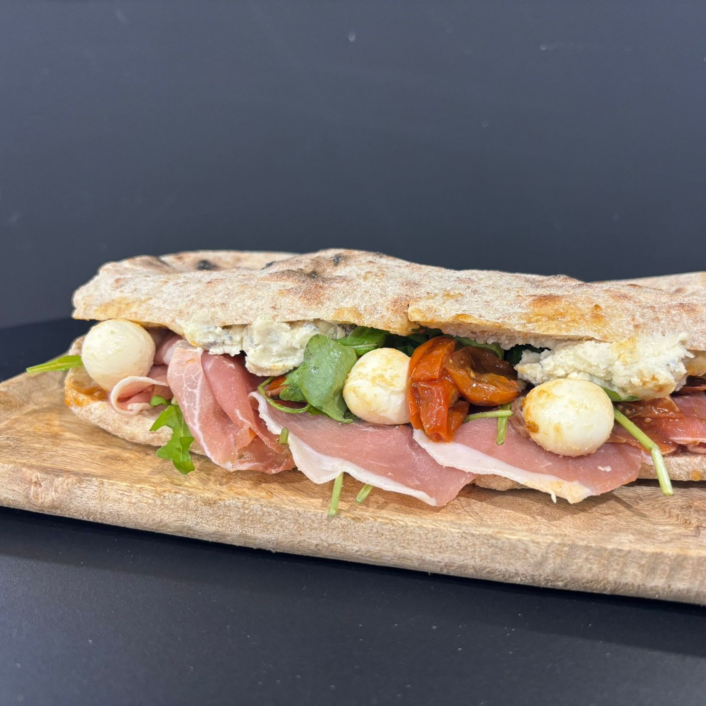

Pistacchioso
Pistache, truffe, burrata. La signature immédiate.
Un comptoir italien rue d'Amsterdam. Chaud, rapide, généreux, avec juste assez de style pour qu'on s'en souvienne.


La bonne direction pour CAVA peut être simple: des photos franches, une typographie forte, du texte court et une vraie sensation d'adresse locale. Le site doit donner faim et rassurer en trente secondes.
Pistache, truffe, burrata. La signature immédiate.

Gorgonzola, Parma, bufala, tomates rôties.

À la part ou entière, pour midi comme pour le soir.
Le site final peut rester très beau tout en poussant clairement vers la commande, l'itinéraire et les réseaux.